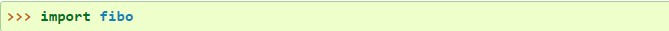
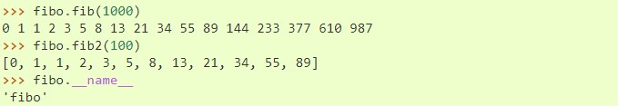
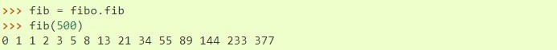

TEMARIO
INTRODUCCIÓN
PROGRAMACIÓN BÁSICA
CONTROLES DE FLUJO
FUNCIONES
ESTRUCTURAS DE DATOS
PROGRAMACIÓN ORIENTADA A OBJETOS
Creación de módulos
Si sales del intérprete de Python y vuelves a entrar, las definiciones que habías hecho
(funciones y variables) se pierden. Por lo tanto, si quieres escribir un programa más o menos largo, es mejor
que utilices un editor de texto para preparar la entrada para el intérprete y ejecutarlo con ese archivo como
entrada. Esto se conoce como crear un script. A medida que tu programa crezca, quizás quieras separarlo en
varios archivos para que el mantenimiento sea más sencillo. Quizás también quieras usar una función útil que has
escrito en distintos programas sin copiar su definición en cada programa.
Para soportar esto, Python tiene una manera de poner definiciones en un archivo y usarlos en un script o en una
instancia del intérprete. Este tipo de ficheros se llama módulo; las definiciones de un módulo pueden ser
importadas a otros módulos o al módulo principal (la colección de variables a las que tienes acceso en un script
ejecutado en el nivel superior y en el modo calculadora).
Un módulo es un fichero conteniendo definiciones y declaraciones de Python. El nombre de archivo es el nombre
del módulo con el sufijo .py agregado. Dentro de un módulo, el nombre del mismo módulo (como cadena) está
disponible en el valor de la variable global __name__. Por ejemplo, utiliza tu editor de texto favorito para
crear un archivo llamado fibo.py en el directorio actual, con el siguiente contenido:
Ahora entra en el intérprete de Python e importa este modulo con el siguiente comando:
Esto no añade los nombres de las funciones definidas en fibo directamente en el espacio de nombres actual; sólo añade el nombre del módulo fibo. Usando el nombre del módulo puedes acceder a las funciones:
Si pretendes utilizar una función frecuentemente puedes asignarla a un nombre local:
Un módulo puede contener tanto declaraciones ejecutables como definiciones de funciones. Estas declaraciones están pensadas para inicializar el módulo. Se ejecutan únicamente la primera vez que el módulo se encuentra en una declaración import.